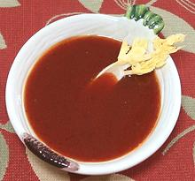

 |
Tomatoey DipCalifornia | ||||
| Makes: Effort: Sched: DoAhead: |
1-3/4 cup ** 10 min Yes |
Excellent for Crudités - this is actually our excellent "French Dressing" recipe, but with even less sugar. | |||
|
|
2 2/3 1/2 1/2 1/2 1/2 1/2 1/2 1/2 2 1/4 |
T c c c t t t t t t t |
Sugar Ketchup Oil (1) Vinegar, white Celery Seed Chili Powder Paprika Mustard dried Onion Powder Salt Pepper |
Make - (10 min)
|